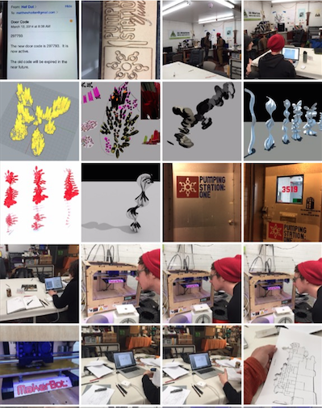
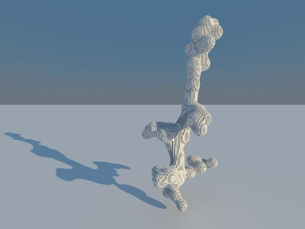

Hackathons - ArtScienceHack v1.0 + v2.0

Concept
I have two really good friends that are both professional designers/artists living in Chicago. Every year over the holiday break we would discuss how fun it would be to do a collaborative project, but never got around to doing one because of our busy schedules. This year we planned a few months in advance to have a hackathon style four day work session between Christmas and New Years. We wanted to move as quickly as possible and make as many ideas happen as possible in our short time frame. We discussed all of the different data sets that I had as part of various research projects and the ones that turned out to be most appealing were the high-throughput plant imaging data sets.
Crew
Johnny Clark is an architect and designer currently working for Jordan Mozer. The Mozer firm’s was our home base for creativity, industrial grade internet, and organic shape object art inspiration. Matt Harlan is a freelance designer and screen printing guru. Matt also works on this awesome architecture zine called soiled. And myself.
Arabidopsis thaliana architectural forms
I just learned Rhino about four hours earlier so this was a successful visualization of an Arabidopsis growth time series. This is a mosaic of the steps in constructing this city. As part of another project in the lab I have thousands of Arabidopsis timelapse images. I quickly modified some other code for a quick python script to binerize the plant relative to the background and then quantified plant area in each successive image. The height of the buildings correspond to the difference in rosette size from the previous timepoint. Then I got to really have fun and make a skyline and city in the shape of one of the plant outlines. Moving around the city that I had just made was really trippy especially when doing it from a 6 foot tall person perspective. The upper right is a view from the skydeck of a building. Johnny helped me make the surface transparent to give it a glass coffeetable feel. I think overall this project might help me pass Architecture 101.
Arabidopsis City visualization using rosette growth data:

Brassica rapa architectural forms
For another lab project I am doing some 3D reconstructions of Brassica rapa. I have loads of this kind of data, but thought it would be nice to see what an artist’s perspective might use the data for. First things first, it was much too dense to load into memory so we randomly sampled the point cloud and made some wire frames by nearest neighbor searches. The renderings are simple and elegant. Then Johnny took it to the next level with a Rhino plugin called Grasshopper to produce the metaball renderings and octree representations of the data. A free plugin that might make the cost of Rhino worth it.
The original 3D data of a brassica plant:
Brassica rapa sparse proximity structure:

Brassica rapa metaball space structure:

ArtSciencHack - v2.0
Concept
For the second iteration of the ArtScienceHack in 2016, we decided to bring our art, design, science, engineering, and data skills together to work on a single project for 48 hours. We had very minimal exposure to the processing language prior to starting this, but I had experience building things in many other languages. Processing is a good first language to learn for designers and artists so we started there.
Goals
Rapidly learn the basics of processing and make an interactive model of plant growth that takes human movement as input to the model.
Outcomes
Overall the hackathon was a success. We had an interactive model of plant growth that had a fundamental trade-off function built in. This trade-off is visualized as the root:shoot ratio using hand control through the hacked xbox connect controller.
ArtScienceHack-v-2.0 Plant Growth Model Xbox Connect Hack:
Code available here.